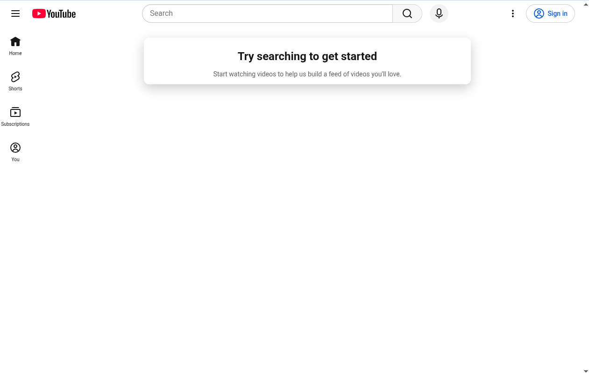

Side note: For some reason when I used the accessibility checker, Firefox had a stroke and then took my entire computer with it. I don't know why this made me laugh for 5 minutes.

https://www.youtube.com
YouTube
Users searching for a large video sharing website.
Youtube uses a hierarchical organization type. It has a home page with subcategories users can go to and from to access different parts of the site.
Youtube is a very well designed site, using every design principal in CRAP, with the one I would like to point out being repetition, due to every page using very similar layouts and theming across the entire site, regardless of how packed or light each page is.
YouTube is the video sharing site. When people think of a video sharing site, they immediately think of YouTube and because of that, the site is people's go to when they need to search for videos and such. Furthermore, because of it's common knowledge, a lot of people go to Youtube to share their videos too, so it becomes self fulfilling prophecy for the site.
The home page of YouTube is designed to allow users to get to where they need to go fast. With a search bar, account info page, subscriptions page, and more all in one place, the site is perfectly designed to allow users to access the most common things very quickly, with sub menues for each one built the same way.
As said before, YouTube is the most popular video sharing site in the world. You could make the argument that Youtube is the video sharing industry since it has become synonomous with online video sharing in general. Yes, Youtube is the most popular for the industry and therefor, often sets the bar.
The only thing I can really suggest from a UI standpoint is bring back the home page with videos for users who don't sign in. I think that was just an unnecessary change to make users have to sign in with a google account in order to use the basic home page which I find a little unnecessary.
But overall, a very good and useful site.